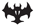
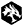
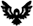
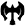

Standard et les extensions légales
Standard est un format pour joueur au jeu qui est en rotation. Les extensions disponible pour faire un deck
(le jeu de carte utiliser pour jouer) vari avec le temps. Ceci permet d'avoir un type de jeux qui n'a pas de stratégie stagnante.
Elle permet aussi de favoriser l'utilisation des nouvelles cartes. Il est conseiller de commencer par ce format pour les nouveaux joueurs.
Extension disponible
-
Innistard : noce écarlate

-
Innistard : chasse de minuit
-
Forgotten Realms : aventures dans les Royaumes Oubliés

-
Strixhaven : l'Académie des Mages

-
Kaldheim

-
Renaissance de Zendikar